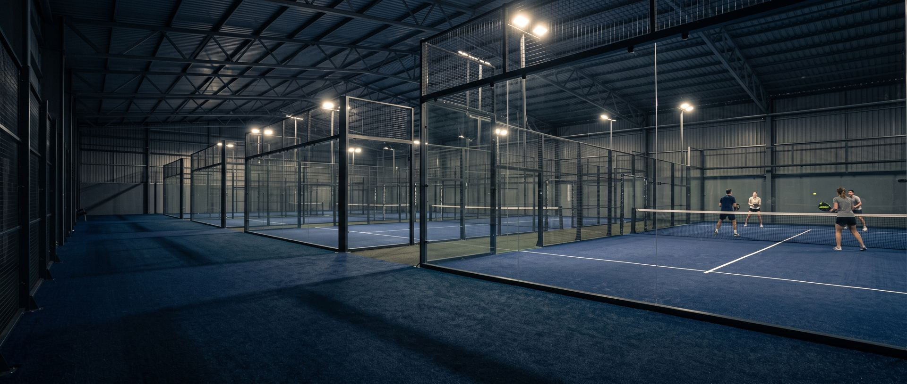
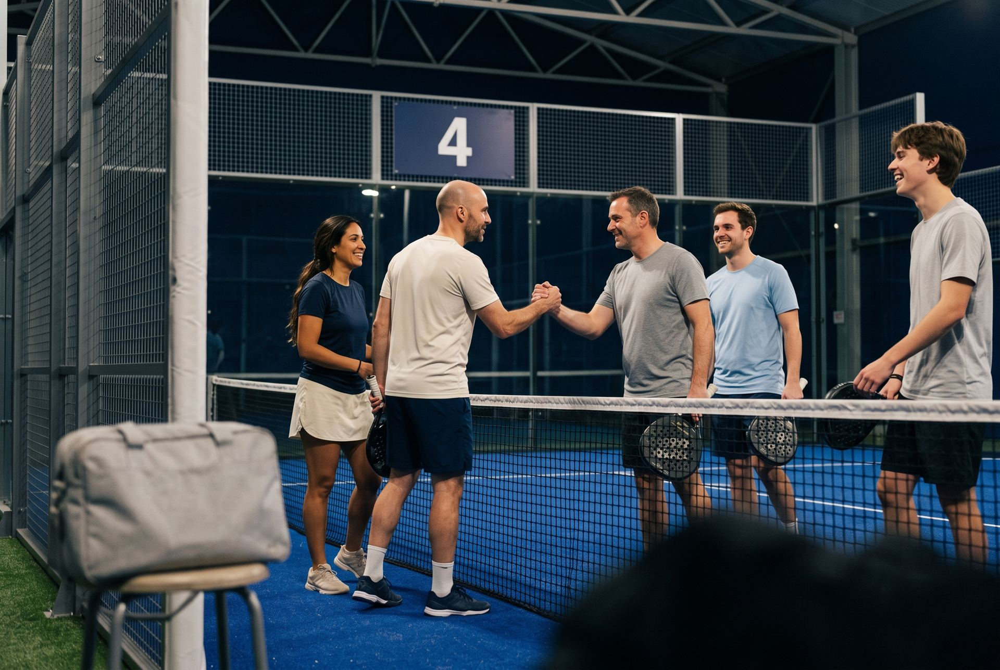

Las pistas están genial. Buenos profesores dando clases técnicas y dinamicas.Los pozos muy chulos, con buen ambiente y picoteo. Buen servicio y el personal es majo y atento.
Miguel ÁngelHace 6 meses · ★★★★★ GoogleAlpha Padel · Club de pádel en Alcorcón
Pádel en Alcorcón
Siete pistas cubiertas y dos descubiertas, abiertas hasta medianoche. Reserva en Playtomic o apúntate a un pozo si no tienes con quién jugar.
La reserva se hace en Playtomic.
Siete pistas cubiertasDos descubiertasPozos de viernes a domingoSeis partidos de quince minutosPicoteo al acabarBar en inviernoTerraza de verano con barbacoa

Pozos
¿No tienes con quién jugar?
Apúntate a un pozo. Viernes, sábado y domingo, por la mañana y por la tarde. Seis partidos de quince minutos: quien gana sube de pista, quien pierde baja. Te apuntas solo o en pareja y juegas con gente de tu nivel. Al acabar, picoteo para todos.

1
2
3
4
5
6
7
Ejemplo: sales en la 4; si ganas, subes a la 3; si pierdes, bajas a la 5.El club
¿Qué hay además de pistas?
Escuela, ranking, clases particulares y terraza tienen su página. Pregunta por horarios y plazas.
01
Siete pistas cubiertas, para jugar llueva o haga sol
02
Dos pistas descubiertas
03
Bar en invierno y terraza de verano con barbacoa
Ver bar y terraza →04
Pistas cubiertas y descubiertas
7Pistas cubiertas
2Descubiertas
6Partidos por pozo
15Minutos cada uno


Escuela
¿Quieres aprender o mejorar?
Escuela, ranking y clases particulares. Pregunta por horarios y plazas.
Galería
Así se juega
01 / 13
Opiniones
¿Qué dicen los que juegan?
01 / 10
Buen club de padel, pistas muy buenas y gran ambiente. Pozos muy divertidos los fines de semana y gran escuela.
José ManuelHace una semana · ★★★★★ GoogleHemos jugado un pozo y las pistas estaban genial. Nos han invitado después a choricito, morcilla y butifarra. Ha estado todo fenomenal y el personal super simpático. Vendremos a menudo a este sitio ahora que lo hemos descubierto.
José AntonioHace 7 meses · ★★★★★ GoogleLas pistas está muy bien, gente agradable y la hamburguesa muy buena, entra de lujo después del pozo
VicenteHace 6 meses · ★★★★★ GoogleGenial , hemos empezado a ir con más frecuencia a este club , ya que las instalaciones nos gustan , nos tratan genial y hay muy buen ambiente , siempre a disposición y atentos , gracias :)
NataliaHace 9 meses · ★★★★★ GoogleLas instalaciones son increíbles y el personal es majísimo lo recomiendo mucho
AdriánHace 6 meses · ★★★★★ GoogleQue sol, que terraza, que agua calentita al acabar de jugar.... Pero después, no conozco un sitio con los tercios más fríos!!!!! Muy recomendable jugar en Alpha Padel.
TomásHace 6 meses · ★★★★★ GoogleHacia mucho que no iba, pero las cosas no han cambiado. Muy bien, los responsables, muy implicados y muy agradables. Buen sitio
ChristianHace 2 meses · ★★★★★ GoogleEstoy muy contento, porque he descubierto un lugar muy agradable familiar y un trato Exquisito y muy profesionales.volveré Seguro.
José AlbertoHace 6 meses · ★★★★★ GoogleMuy buen sitio, se juega agusto y gente muy amable
BembaHace 7 meses · ★★★★★ GoogleReseñas literales de la ficha pública de Google. Ver las reseñas en Google
La zona
Pádel cerca de ti
Si vienes de Móstoles, Leganés o Fuenlabrada, estás a un paso.
Cómo llegar
¿Cómo llego?
Carretera M-506, km 9, salida Móstoles Centro, junto al hotel La Princesa, en Alcorcón. Si vienes de Móstoles, Leganés o Fuenlabrada, estás a un paso.